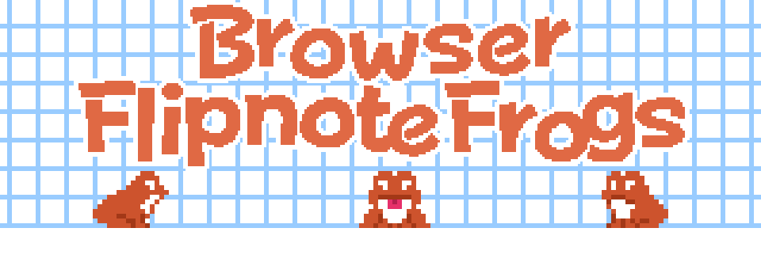

King Mayro
Hiya, I'm Mayro, a graphic designer/pixel artist and writer, rom hacker, and amatuer web programmer. I like pastel colors, especially purple, City Pop and Jazz Fusion, and Frogs.
FamicomCD - My favorite project of mine. The concept behind FamicomCD is that it is a fictional CD-based console for the original Famicom. The project itself encapsulates multiple mini-projects under FamicomCD such as Super Mario Bros. CD.

Browser Flipnote Frogs - A silly little project I made in a few days. It is meant to "recreate" the Flipnote frogs from the title screen of Flipnote Studio for the most part. (Beware, this one requires a quicker internet speed due to the amount of graphics and code).

© Copyright 2024, King Mayro